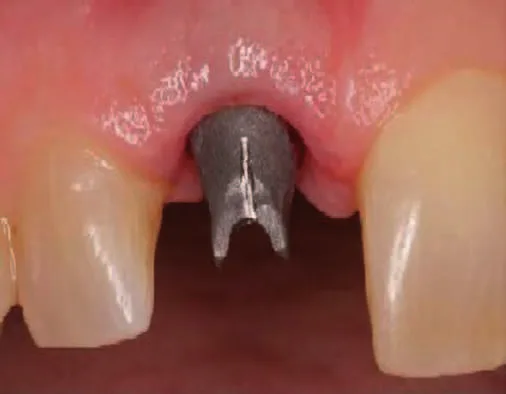
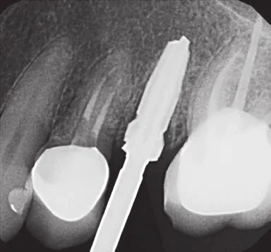

نسخه استخراجشده؛ ترجمه یا تأیید علمی انجام نشده است. وضعیت: captured
صریح بدان: کاشت فوری سختگیرانهتر است و ست مهارتی ویژهای از درمانگر میطلبد. و مشکل بنیادیاش یک واقعیت هندسی است:
پس از کشیدن دندان، ابعاد ساکت باقیمانده — چه مزیودیستال و چه باکولینگوال — معمولاً بسیار متفاوت از قطر ایمپلنت است. یعنی ایمپلنت در فضایی قرار میگیرد که برای آن ساخته نشده.
و پیامد مستقیمش: نبود استخوان کرستال در محل کشیدهشده، رسیدن به ثبات اولیه را دشوارتر میکند. همان ثبات اولیهای که در یونیت ۱۱ دیدی شرط لازم استئواینتگریشن است.
انتخاب مورد. برای هر دندان یک نظام سهرنگ تعریف شده: شرایط ایدهآل (سبز)، شرایط محتاطانه (زرد)، کنترااندیکاسیون (قرمز). و برای هر موقعیت دندانی، پروتکل طرح درمان جداگانهای بحث میشود.
دو نشانهی هشدار در انتخاب مورد:
فرم تاج مخروطی (تیپرد) معمولاً با خطر بالاتر آسیب بافت نرم پس از کشیدن دندان همراه است.
استخوان D4 نرخ شکست بیشتری با کاشت فوری دارد.
و دربارهی محل عفونی: پژوهشها نشان دادهاند تا زمانی که آنتیبیوتیک استفاده شود، دبریدمان دقیق انجام شود و آمادهسازی استخوان آلوئولار پیش از کاشت بهدرستی صورت گیرد، ایمپلنت فوری در محل عفونی کنترااندیکه نیست. توجه کن که این یک اجازهی مشروط است با سه شرط — نه یک چراغ سبز.

گپ پرشی (Jumping Gap). فضای میان ایمپلنت و دیوارهی ساکت — و مدیریتش بخشی از تکنیک است، نه یک جزئیات.
روش عملی: خردههای استخوانی از شیار فرزها جمعآوری و برای پیوند گپ باکال پس از کاشت ایمپلنت نگه داشته میشوند. یعنی استخوان اتوژن بیمار، رایگان و در دسترس، از همان استئوتومی به دست میآید.
مواد پیوند برای پر کردن گپ پرشی و هر نقص استخوانی به کار میروند، و پلاگر آمالگام ابزار عملی قرار دادن ماده در فضاهای کوچک است.
حاشیهی خطای جراحی. بهعنوان یک راهنمای کلی، ۱٫۵ تا ۲ میلیمتر خطای جراحی میان ایمپلنت و هر لندمارک یا ساختار حیاتی مجاور در نظر گرفته میشود.
بستن محل — یک واقعیت مهم. در بیشتر محلهای کاشت فوری، رسیدن به بستهشدن اولیه دشوار است مگر آنکه فلپ پیش برده شود. و توجه کن که پیش بردن فلپ خودش هزینه دارد: بافت کراتینیزهی فاسیال پروتز کمتر میشود و اغلب پیوند بافت نرم لازم میشود. برای همین معمولاً بستهشدن اولیهی کامل انجام نمیشود و روی ساکت ممبران یا پلاگ کلاژن گذاشته میشود.
پروویژنال و شکلدهی بافت. در موارد بارگذاری فوری، ترمیم موقت با طراحی پونتیک اوویت میتواند بافت نرم را ترمیم و شکلدهی کند. و اگر امکانش باشد، پروویژنال ثابت یا پروتز بدون فشار برای ترمیم موفق ایدهآل است — کلیدواژه بدون فشار است.
و شواهد پشتیبان: مطالعات نشان دادهاند استفاده از ایمپلنت فوری تکواحدی همراه با پروویژنال فوری، به ثبات بافت لثهی فاسیال کمک میکند — با پیگیریهای ۲ تا ۸ ساله.
